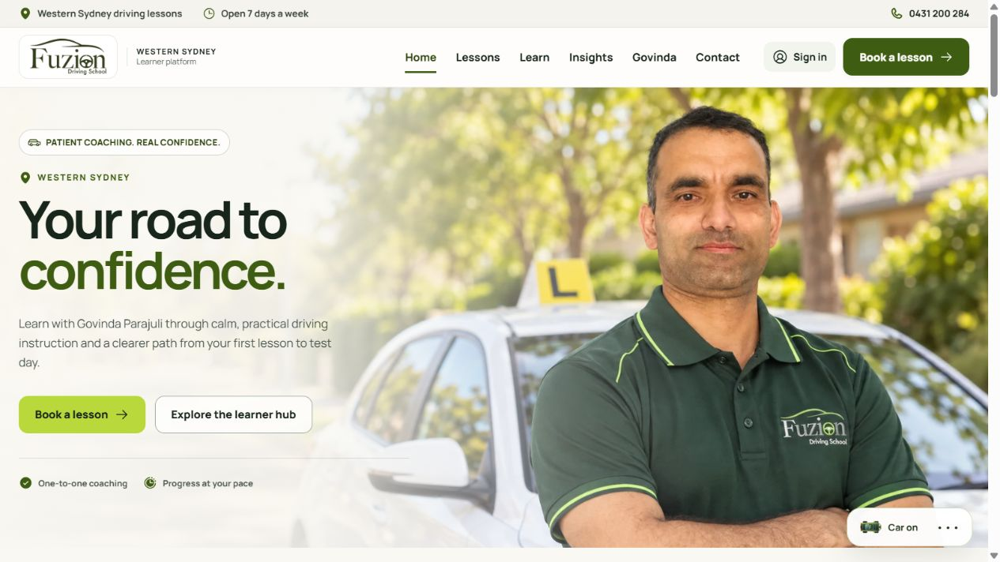

Case study 04 · Website & service workflows
Fuzion Driving School
A public website connected to the work behind a lesson.

Connect the customer journey to service operations.
A driving-school website needs to explain the service clearly and provide a useful path from lesson selection to booking. Behind that public journey are availability rules, lesson records and different responsibilities for learners, instructors and administrators.
I designed and developed Fuzion Driving School’s responsive website and learner platform, bringing those requirements into one application while keeping public information and role-based workflows distinct.
Make the business rules part of the implementation.
Reusable public and learner interfaces
I built React components for public service information, learner preparation resources and the application’s role-aware interfaces. A shared interface structure keeps navigation and recurring interactions consistent.
Availability and booking state
The database-backed booking workflow uses expiring appointment holds and transactional validation to handle competing requests. Configurable scheduling and booking-management rules support the progression from an available lesson to a recorded booking.
Permission boundaries
Learner, instructor and administration interfaces have distinct responsibilities, supported by server and database permission rules. These implementation choices are documented separately from formal security assurance or production acceptance.
Deliver a controlled release and retain the acceptance work.
I delivered the main-domain website with a recovery path for the previous site. Public homepage and booking/login route checks form one part of that release; they do not establish every signed-in operational outcome.
The development work also covers scheduling, booking management and lesson records. Continued acceptance should follow the complete learner and instructor journeys, including actual message receipt and timed behaviour.
Explore the live public websiteA live public website with operational acceptance tracked separately.
The public website is live. The developed learner, instructor and administration workflows require their own operational acceptance evidence before being described as fully verified.
The source remains private. This case study uses the public homepage and describes implementation decisions without exposing private learner or staff records, account details or deployment identifiers.